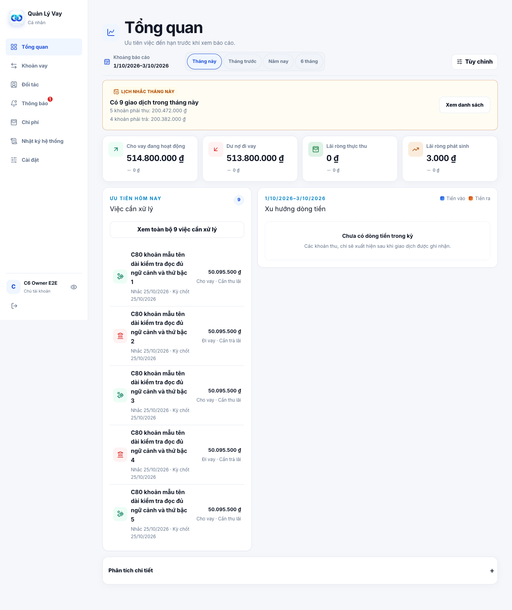
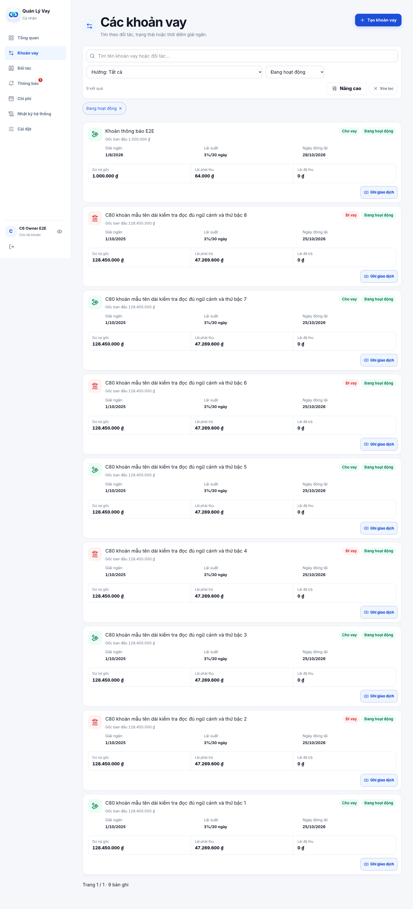
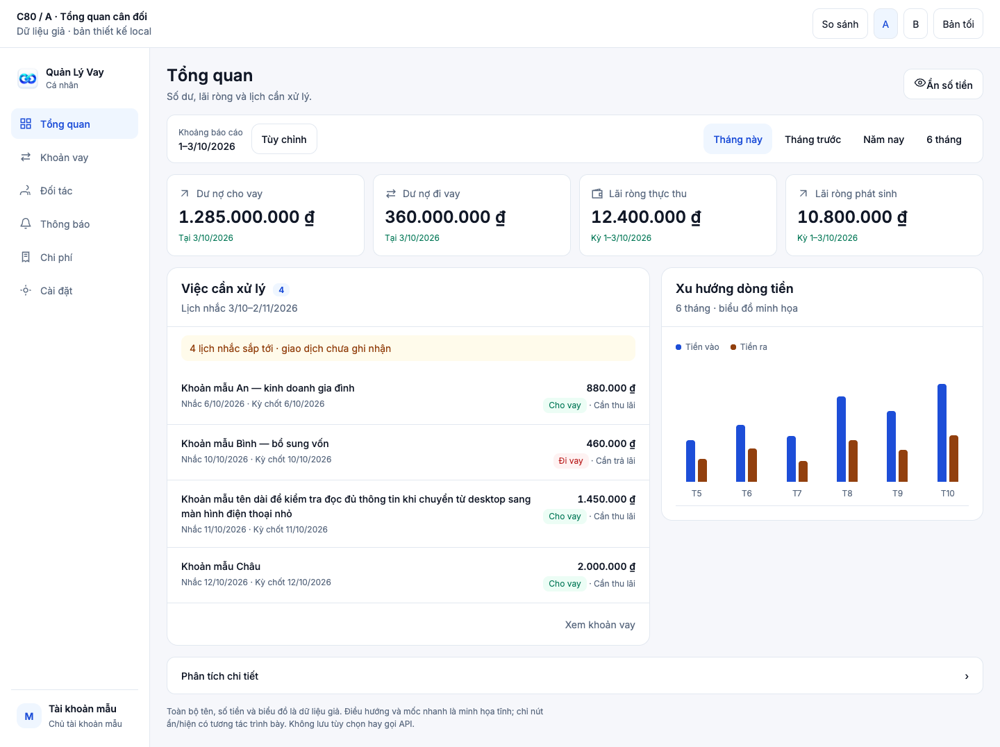
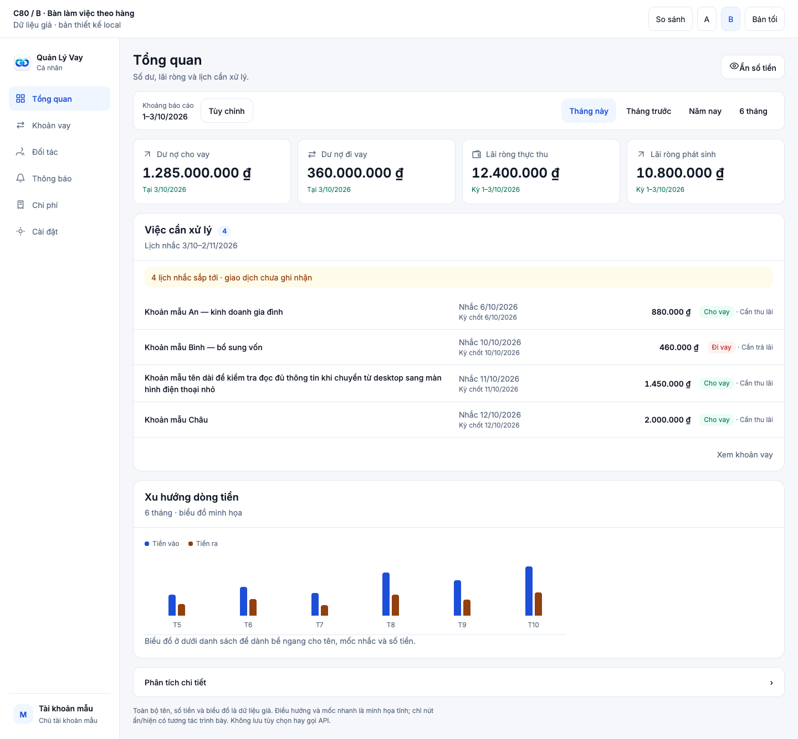

C80 · Audit và đề xuất · 03/10/2026
Gọn hơn, vẫn ưu tiên số dư và lãi ròng
Hai bản giữ màu xanh, Inter và thứ tự KPI trên Việc cần xử lý. Mọi số liệu là giả; chưa sửa Production.
Hiện tại · Dashboard
Source C79, render local với dữ liệu giả.

Hiện tại · Khoản vay
Card nhiều tầng trên desktop, dữ liệu giả.

A · Tổng quan cân đối
Khuyên dùng. KPI gọn, bỏ banner cao lặp lịch nhắc; tên việc có nhiều bề ngang hơn. Dòng tiền vẫn xem cạnh danh sách trên desktop.

- Hợp khi mở app để xem số dư, nhắc việc và xu hướng.
- Mobile xếp KPI hai cột rồi danh sách; biểu đồ sau danh sách.
- Danh sách khoản vay dùng hàng gọn trên desktop; giữ dữ kiện để đối chiếu.
Dashboard AKhoản vay AA tốiA ẩn tiềnB · Bàn làm việc theo hàng
KPI vẫn trên cùng; danh sách việc chiếm toàn bộ bề ngang, tách cột tên, mốc nhắc và số tiền. Biểu đồ chuyển xuống dưới.

- Hợp khi chủ yếu đối chiếu và xử lý nhiều việc.
- Tên dài đọc rõ hơn; thông tin theo cột dễ so sánh.
- Khoản vay dùng card nhiều cột; dòng tiền ở dưới nên cần cuộn thêm.
Dashboard BKhoản vay BB tốiB ẩn tiềnCác nút bộ lọc/điều hướng chỉ minh họa. Nút ẩn/hiện có tương tác local, không gọi API hoặc lưu preference. Giao diện sản phẩm chỉ thay sau phê duyệt C81. Màu tại :root và :root[data-theme=dark] trong mockup.css; font tái sử dụng Inter của dự án ở fonts.css.